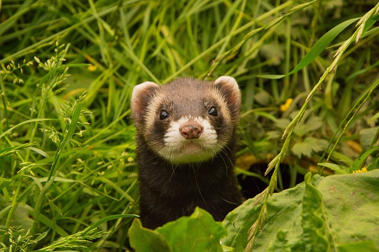
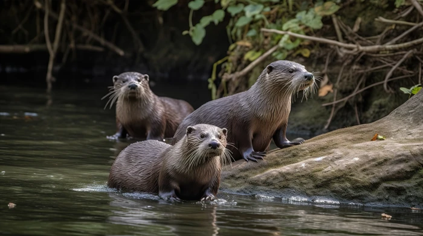
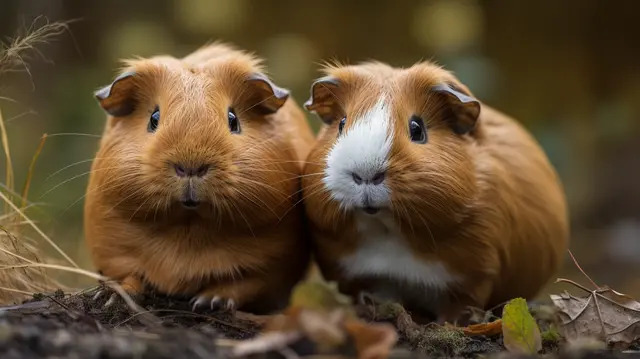

Início
Sobre
Feedback
Jogos
Acessibilidade
Camundongo
Mus musculus Linnaeus, 1758
Sobre
Capivara
Hydrochoerus hydrochaeris Linnaeus, 1766
Sobre
Cateto
Pecari tajacu Linnaeus, 1758
Sobre

Furão-pequeno
Galictis cuja Molina, 1782
Sobre
Gambá-de-orelha-branca
Didelphis albiventris Linnaeus, 1758
Sobre
Irara
Eira barbara Linnaeus, 1758
Sobre
Jaguatirica
Leopardus pardalis, Linnaeus 1758
Sobre
Jaratataca
Conepatus semistriatus Boddaert, 1785
Sobre
Lobo-guara
Chrysocyon brachyurus Illiger, 1815
Sobre

Lontra
Lontra longicaudis Olfers, 1818
Sobre
Paca
Cuniculus paca Linnaeus, 1766
Sobre

Porquinho-da-índia
Cavia porcellus Linnaeus, 1758
Sobre
Mico-estrela
Callithrix penicillata Geoffroy, 1812
Sobre
Tamandua-bandeira
Myrmecophaga tridactyla Linnaeus, 1758
Sobre
Tamandua-mirim
Tamandua tetradactyla Linnaeus, 1758
Sobre
Tatu galinha
Dasypus novemcinctus Linnaeus, 1758
Sobre
Tatu peba
Euphractus sexcinctus Linnaeus, 1758
Sobre
Cachorro-do-mato
Cercydocyon thous Linnaeus, 1766
Sobre
Informações sobre Mamíferos
Características Principais
Pelos:
A presença de pelos é uma característica única dos mamíferos, ajudando no isolamento térmico.
Glândulas mamárias:
As fêmeas produzem leite para alimentar seus filhotes.
Sangue quente (endotermia):
Mantêm uma temperatura corporal constante, independente do ambiente.
Reprodução:
A maioria é vivípara (dá à luz filhotes), mas alguns, como o ornitorrinco, são ovíparos.
Cérebro desenvolvido:
Possuem um sistema nervoso complexo, com capacidades cognitivas avançadas.
Diversidade
Existem cerca de
6.500 espécies de mamíferos
no mundo.
Estão divididos em três grupos principais: monotremados, marsupiais e placentários.
Habitam diversos ambientes, como florestas, desertos, oceanos e até áreas urbanas.
Comportamento
Alimentação:
Podem ser herbívoros, carnívoros, onívoros ou insetívoros, dependendo da espécie.
Comunicação:
Usam sons, cheiros e linguagem corporal para se comunicar.
Vida social:
Muitos mamíferos vivem em grupos, como lobos, leões e elefantes.
Importância Ecológica
Polinização:
Morcegos e outros mamíferos ajudam na polinização de plantas.
Dispersão de sementes:
Ao comer frutas, mamíferos como macacos e morcegos espalham sementes.
Controle de populações:
Predadores como leões e lobos ajudam a manter o equilíbrio dos ecossistemas.
Ameaças
Muitas espécies estão ameaçadas devido à perda de habitat, caça, mudanças climáticas e poluição.
A conservação de habitats e a criação de áreas protegidas são essenciais para sua sobrevivência.
Curiosidades
A
baleia-azul
é o maior mamífero do mundo, podendo atingir até 30 metros de comprimento.
O
morcego
é o único mamífero capaz de voar.
O
ornitorrinco
é um mamífero que bota ovos e possui veneno.